The information theory of matrix completion
Matrix completion is the problem of reconstructing a $k \times n$ matrix from a subset of its entries. It appears in recommendation systems, where a ratings matrix is mostly unobserved; in computer vision, where missing pixels or measurements must be filled in; and in many other settings where data is partially observed. The standard approach assumes the matrix is low rank and recovers it by convex optimization, with guarantees that carry a numerical constant and a logarithmic factor.
Suh's 2014 paper takes a different route. Rather than fixing one matrix and analyzing the worst case, it models the matrix as a stochastic source observed through an erasure channel, and asks an information-theoretic question: how many entries does a single observation resolve, on average? The answer is a quantity called the completion capacity, and it fixes the minimum number of observations required for reliable reconstruction. This post explains that framework, presents a computational implementation that verifies its predictions, and develops several extensions. The implementation, the report, and all figures are available in the project repository; the underlying paper is arXiv:1402.4225.
1.The completion capacity
Consider a matrix whose $n$ columns are independent and identically distributed draws of a column law $(X_1, \dots, X_k)$, with each entry revealed independently with probability $p$ and erased otherwise. Suh's completion capacity for this i.i.d.-column model is
the ratio of the summed marginal entropies of a single column to its joint entropy. It is the average number of matrix entries that one observation resolves. The minimum number of observed entries needed for reliable reconstruction is $m = kn / C$, equivalently the erasure channel must satisfy $p \ge 1/C$. All quantities are in bits.
The derivation is a counting argument. Over $n$ columns, an erasure channel at rate $p$ delivers $\sum_\ell I(X_\ell; Y_\ell) = p\,nS$ bits, where $S = \sum_\ell H(X_\ell)$, and this must cover the $n\,H(X_1, \dots, X_k)$ bits of source entropy; hence $p \ge 1/C$ and $m \ge kn/C$. The achievability direction adapts the Slepian–Wolf random-binning argument to the erasure setting.
2.Reading the capacity through redundancy
A short rewrite makes the framework transparent. Define the total correlation (multi-information)
$$ \mathrm{TC} = \sum_\ell H(X_\ell) - H(X_1, \dots, X_k) \ge 0, \qquad \text{so} \qquad C = \frac{S}{S - \mathrm{TC}}. $$The capacity is monotone increasing in the redundancy $\mathrm{TC}$. With no redundancy ($\mathrm{TC} = 0$, independent rows) the capacity is $C = 1$: one observation resolves exactly one entry. As the rows become a deterministic function of a few of them, $\mathrm{TC} \to S$ and $C \to \infty$. The whole theory is an elaboration of this single monotonicity. Everything that follows is a way of computing $\mathrm{TC}$ for a particular matrix model.
3.Exact discrete cases
Four discrete column laws have closed-form capacities, each reproduced to machine precision by the implementation.
| Model | Column law | Capacity |
|---|---|---|
| Independent | $\prod_\ell p(x_\ell)$ | $C = 1$ |
| Identical rows | $X_1 = \dots = X_k$ | $C = k$ |
| Linear code | $X = Gu,\ u \sim \mathrm{Unif}(\mathrm{GF}(2)^r)$ | $C = k/r$ |
| Common bit + noise | $X_\ell = B \oplus Z_\ell,\ Z_\ell \sim \mathrm{Bern}(q)$ | $k \to 1$ as $q: 0 \to \tfrac12$ |
The linear-code row is the discrete analogue of a rank-$r$ matrix. If $G$ is $k \times r$ over $\mathrm{GF}(2)$ with full column rank and no zero row, every marginal is uniform so $S = k$, while the column takes $2^r$ equally likely values so $H(X_1, \dots, X_k) = r$; hence $C = k/r$ and $m_{\min} = rn$, exactly the degrees-of-freedom count of a rank-$r$ object.
The common-bit model is the instructive contrast. All rows share a latent bit $B$, observed through independent $\mathrm{Bern}(q)$ noise. The marginals stay uniform so $S = k$, and the capacity slides from $k$ at $q = 0$ down to $1$ at $q = \tfrac12$. The redundancy here is noisy: for any $q \in (0, \tfrac12)$ exact completion is impossible even though $C > 1$, because the shared information is not a deterministic function of the observations.
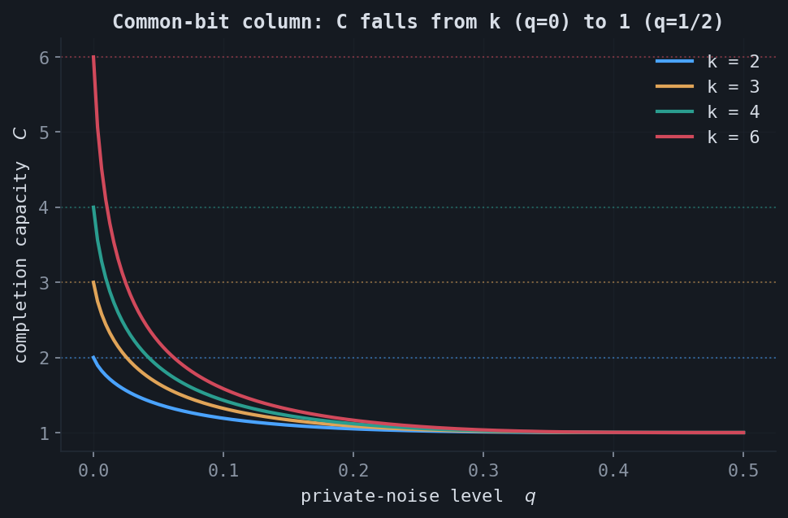
4.Gaussian and covariance models
For a Gaussian column $X \sim \mathcal{N}(0, \Sigma)$ the direct plug-in into the capacity formula uses differential entropies, but differential entropy is scale dependent and the ratio diverges as $\det\Sigma \to 0$. The operational object quantizes each coordinate to a grid of width $\Delta$. A principal direction with eigenvalue $\lambda$ contributes $\max\!\big(0,\ \tfrac12\log_2(2\pi e \lambda) - \log_2\Delta\big)$ bits, so directions whose spread $\sqrt{\lambda}$ falls below the resolution $\Delta$ are frozen and carry nothing. As $\Delta \to 0$, a full-rank $\Sigma$ gives $C \to 1$, while an exactly rank-$r$ $\Sigma$ gives $C \to k/r$.
Two structured covariances have closed-form log-determinants, verified exactly: the equicorrelated matrix $\Sigma = (1-\rho)I + \rho\mathbf{1}\mathbf{1}^\top$ and the Toeplitz AR(1) matrix $\Sigma_{ij} = \rho^{|i-j|}$,
$$ \log_2\det\Sigma_{\text{equi}} = (k-1)\log_2(1-\rho) + \log_2\!\big(1 + (k-1)\rho\big), \qquad \log_2\det\Sigma_{\mathrm{AR}(1)} = (k-1)\log_2(1-\rho^2). $$At a fixed observation resolution, capacity rises with correlation. The all-to-all equicorrelated coupling accrues redundancy faster than the banded AR(1) coupling, which only couples nearby coordinates.
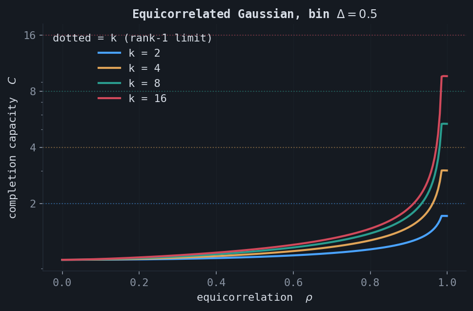
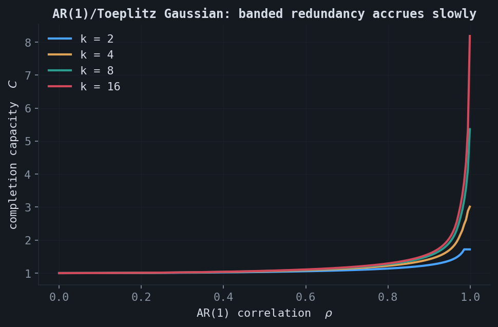
5.The low-rank bridge
Combining the discrete and Gaussian pictures gives the central observation. The binary-code capacity is $C = k/r$ exactly, so $m_{\min} = rn$, the parameter count of a rank-$r$ factorization. The quantized Gaussian capacity converges to $1$ for any full-rank covariance but to $k/r$ for an exactly rank-$r$ one as the resolution sharpens.
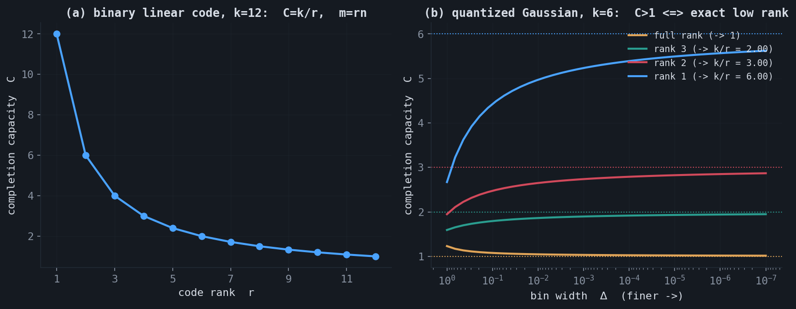
6.Noisy observations
When each entry passes through a discrete memoryless channel before the erasure, entropies become mutual informations, $C = \sum_\ell I(X_\ell; Y_\ell) / H(X_1, \dots, X_k)$. For a rank-$r$ binary code observed through a binary symmetric channel with crossover $\delta$, each nonzero row contributes $1 - h(\delta)$ bits, where $h$ is the binary entropy, giving the closed form $C = k(1 - h(\delta))/r$. At $\delta = 0$ this recovers $k/r$; at $\delta = \tfrac12$ the observation is pure noise and $C$ collapses to zero.
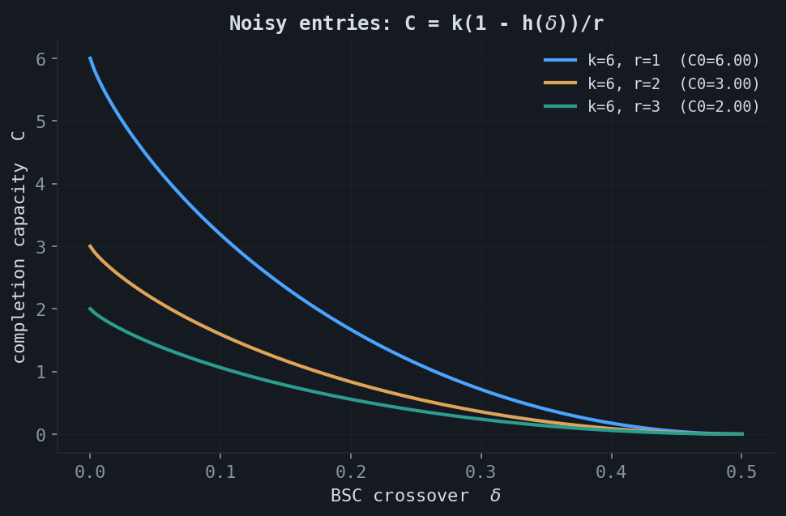
7.Randomized ensembles
For a random matrix model, the capacity has a characteristic distribution. Drawing a discrete joint law from a uniform Dirichlet prior over $\{0,1\}^k$ shows that generic matrices are barely compressible: the capacity concentrates just above $1$, because a random joint has only weak dependence. Sharpening the Dirichlet concentration places mass on fewer patterns, manufacturing redundancy and a heavy right tail.
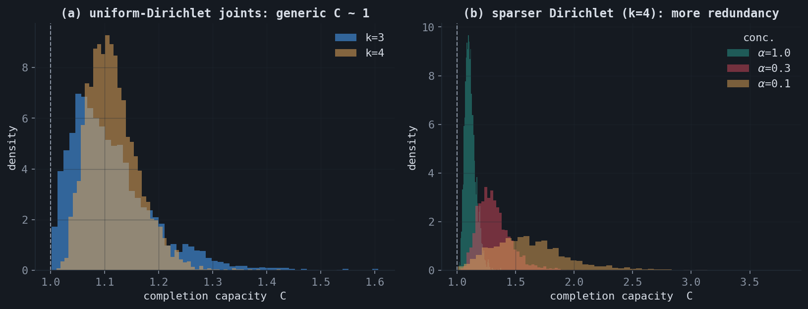
8.An operational decoder
The capacity is a statement about rates. To observe it directly, take the rank-$r$ binary-code model literally: build a $k \times n$ matrix whose columns are random codewords $X = Gu$, erase each entry with probability $1 - p$, and decode every column by Gaussian elimination over $\mathrm{GF}(2)$. A column is uniquely recoverable if and only if its observed rows span the row space; a coordinate is determined if and only if its generator row lies in that span. This lets the experiment compute the expected symbol-error rate exactly, using only integer-XOR row reduction.
The converse threshold is $p^\star = 1/C = r/k$. As $k$ grows at fixed rate, the number of observed rows concentrates and the symbol-error transition at $p^\star$ sharpens, which is the operational signature of the capacity.
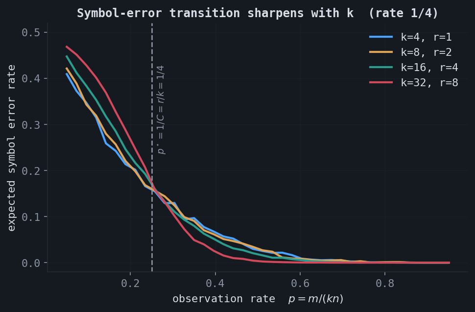
There is a finite-size subtlety worth stating. The counting converse ($m \ge kn/C$) is exact. Achievability at the capacity, however, has a catch at fixed $k$: a single column observed below its information set cannot be recovered, and for independent columns this happens with probability $q(k, p) > 0$. The whole-matrix (block) error is then $1 - (1-q)^n \to 1$ as $n \to \infty$. So exact reconstruction at rate exactly $C$ is not achievable at fixed $k$; the per-column failure $q$ vanishes only as $k \to \infty$.
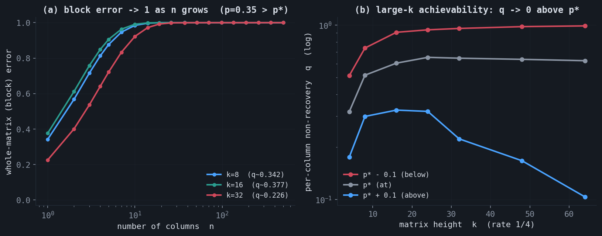
This does not contradict the capacity result. The framework characterizes achievable rates, and the concentration in panel (b) is what makes the rate $C$ meaningful in the high-dimensional regime. The finite-$k$ gap is a statement about block versus symbol error, structurally the same as the gap between block and bit decoding thresholds in coding theory.
9.Capacity as a dimension count
The sections above treat structure living in the column law. To reach matrices defined by a global algebraic constraint (symmetric, Toeplitz, orthogonal), where the columns are not independent and the capacity formula does not directly apply, it helps to recognize that the capacity is, in the end, a ratio of dimensions,
This is the high-resolution limit of the capacity formula, not a new assumption. For a maximum-entropy model on a $d$-dimensional family quantized at scale $\Delta$, the joint law occupies $d$ live dimensions so $H_{\text{joint}} \approx d\log_2(1/\Delta)$, while the $N$ informative marginals give $S \approx N\log_2(1/\Delta)$; the $\log(1/\Delta)$ terms dominate and $C \to N/d$. A rank-$r$ matrix has $\dim\mathcal{F} = r(k+n-r)$, so $C = kn / [r(k+n-r)] \to k/r$ as $n \to \infty$, matching the column-law result.
10.The structure dichotomy
Reading off the degrees of freedom of each structured family is elementary, and the resulting capacities split into two regimes.
| Family | dof | capacity | large $k$ |
|---|---|---|---|
| General / diagonal | $kn$ / $k$ | $1$ | $1$ |
| Rank $r$ | $r(k+n-r)$ | $kn/[r(k+n-r)]$ | $\to k/r$ |
| Toeplitz / Hankel | $k+n-1$ | $kn/(k+n-1)$ | $\sim k/2$ |
| Circulant | $k$ | $k$ | $k$ |
| Symmetric | $\binom{k+1}{2}$ | $2k/(k+1)$ | $\to 2$ |
| Skew-symmetric | $\binom{k}{2}$ | $2$ | $2$ |
| Orthogonal $O(k)$ | $\binom{k}{2}$ | $2k/(k-1)$ | $\to 2$ |
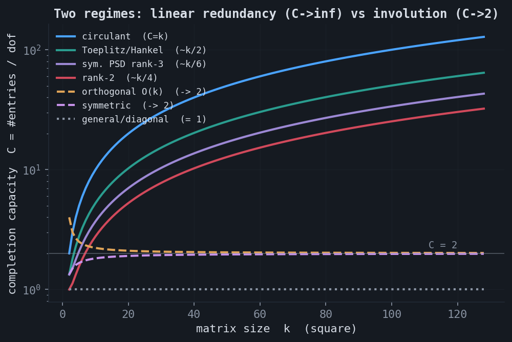
The diagonal case is a useful warning. It has only $k$ degrees of freedom yet $C = 1$, while the circulant also has $k$ degrees of freedom but reaches $C = k$. The difference is coupling: every circulant entry is a copy of one of the $k$ free numbers, so observing anywhere helps everywhere, while the diagonal's live entries are mutually uninformative. Few degrees of freedom raise capacity only when the entries are coupled by them. There is also a separate identifiability question: the bound $C = N/\dim\mathcal{F}$ is always necessary, but whether $\dim\mathcal{F}$ generic observations determine the matrix depends on the geometry. Sparse matrices are the instructive failure: an unobserved entry is indistinguishable from a structural zero, so the support is not identifiable from passive sampling and the count is unreachable.
11.Stationary columns and spectral flatness
For the most general stationary column, let the rows index time or space and let each column be a draw of a stationary Gaussian process with spectral density $f(\omega)$. The equicorrelated and AR(1) covariances are particular spectra; the general invariant is the spectral flatness (Wiener entropy)
$$ \gamma = \frac{\exp\!\big(\tfrac{1}{2\pi}\int_{-\pi}^{\pi}\log f(\omega)\,d\omega\big)} {\tfrac{1}{2\pi}\int_{-\pi}^{\pi} f(\omega)\,d\omega} = \frac{\text{geometric mean of } f}{\text{arithmetic mean of } f} \in (0, 1], $$in terms of which the per-coordinate redundancy converges, by the Kolmogorov–Szegő limit, to $\mathrm{TC}_k / k \to -\tfrac12\log_2\gamma$. White noise has a flat spectrum, $\gamma = 1$, zero redundancy, $C = 1$; the more colored the process, the smaller $\gamma$ and the larger $C$.
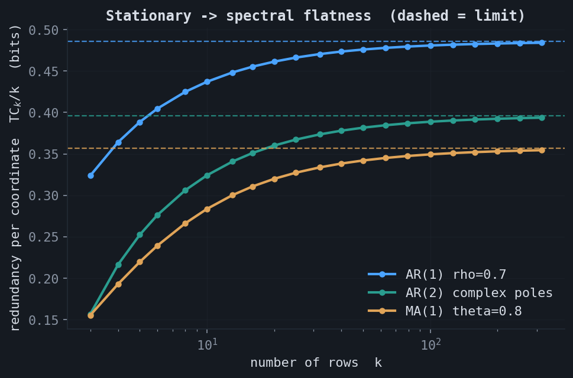
This result is not really about stationarity; it is a statement about the spread of the eigenvalues of any covariance, which is the unification the extensions exploit.
12.Extensions
The framework admits several extensions. The first three below have rigorous cores verified numerically; the fourth is stated as a conjecture.
A rate–distortion capacity. The channel crossover $\delta$, the quantization width $\Delta$, and the notion of "approximately low rank" are one object. If one only needs to reconstruct to average distortion $D$, the converse becomes $m \ge kn/C(D)$ with $C(D) = S / R_X(D)$, where $R_X(D)$ is the rate–distortion function of the column law. At $D = 0$ this recovers the exact capacity; the noisy channel is one operating point on the curve; and for a Gaussian, reverse water-filling makes $R_X(D)$ ignore every eigenvalue below the water level. All three relaxations act by freezing the small directions of the spectrum, under the common identification $\nu = \Delta^2/(2\pi e)$ between resolution and water level.
Capacity as an effective rank. The operational consequence is that capacity measures an effective rank, not the algebraic rank. With a variance floor $\nu$, define $r_{\mathrm{eff}}(\nu) = \#\{\lambda_i > \nu\}$. The quantity $k/C(\nu)$ tracks $r_{\mathrm{eff}}$ as a softened version, weighting each surviving direction by $w_i(\nu) = \log_2(\lambda_i/\nu) / \log_2(\bar\sigma^2_{\text{geo}}/\nu) \in (0,1]$; a direction barely above threshold contributes near zero, a dominant direction near one. Exact rank-$r$ is the special case where the soft count collapses to the integer $r$.
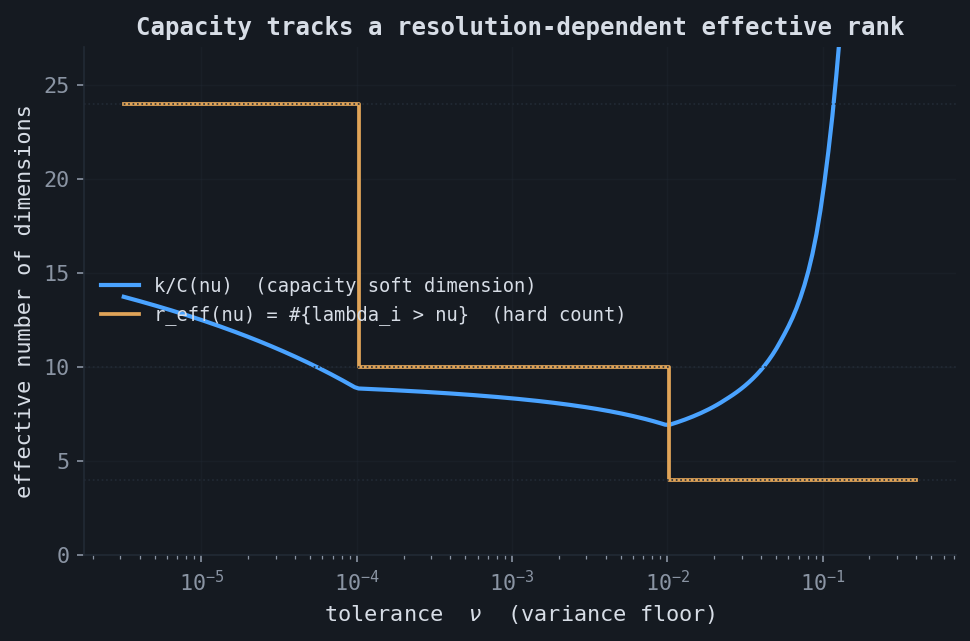
Optimal completion is a sparse precision matrix. For covariance completion, among all positive-definite completions of an observed pattern $\Omega$, the maximum-entropy one is the unique completion whose inverse (precision matrix) is zero off $\Omega$. This is Dempster's covariance selection: the KKT condition for maximizing $\log\det\Sigma$ subject to the observed entries forces $(\Sigma^{-1})_{ij} = 0$ for every unobserved $(i,j)$. The log-determinant peaks exactly where the precision entry vanishes. A positive-definite completion is guaranteed to exist if and only if the observation graph is chordal, and for chordal patterns the entropy decomposes over cliques and separators.
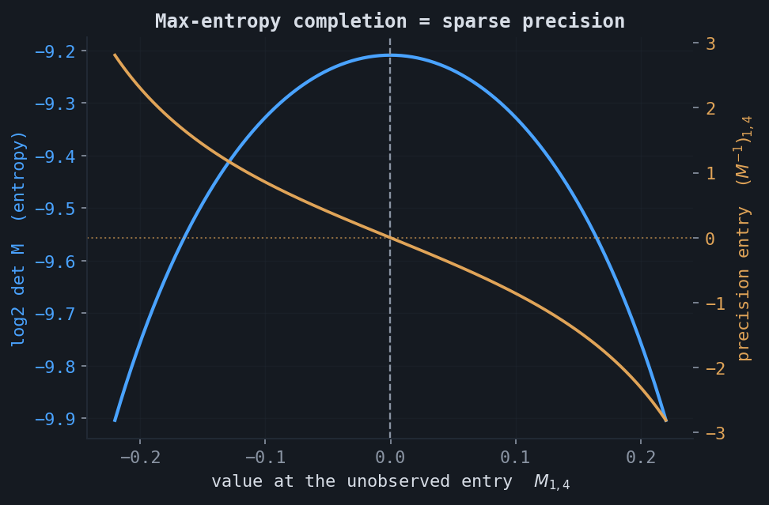
A capacity calculus. Capacities compose: stacking two independent column-blocks gives the entropy-weighted harmonic mean $C = (S_1 + S_2) / (S_1/C_1 + S_2/C_2)$, so the least-compressible block bottlenecks the whole. The block-versus-symbol gap of the operational decoder is structurally the gap between block and bit decoding thresholds in coding theory, where it is closed by spatial coupling. The translation is a testable prediction: introducing slight correlation between columns should close the gap and let exact recovery reach the $1/C$ threshold even at small $k$. The proportional regime $k, n \to \infty$ with $k/n \to c$, where a rank-$r$-plus-noise matrix is a spiked random matrix governed by a Baik–Ben Arous–Péché phase transition, remains the one direction stated only heuristically: the observation fraction $p$ should dilute the signal-to-noise ratio multiplicatively, but the constant is not pinned down by the elementary argument.
★Summary
The completion capacity is the ratio of how large a matrix appears to how large it really is: ambient dimension over intrinsic dimension. A structure helps exactly insofar as it makes the entries a low-dimensional function of few parameters. Independence and isotropy give $C = 1$; exact low rank gives $C = k/r$ and is the only continuous regime with $C > 1$; shift-invariant structure and stationary color raise $C$ by an amount the spectral flatness measures; involutive symmetries give a constant factor of two; and sparsity, lacking functional coupling, gives a passive sampler nothing.
The accompanying notebook reproduces the closed-form capacities of the discrete and noisy models and the structured degrees-of-freedom counts: experiments.ipynb. The full implementation, the LaTeX report, and all figures are in the project repository.